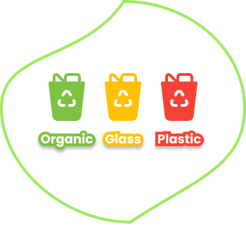

Kenali Jenis Sampah
Pelajari cara membedakan sampah organik, anorganik, dan B3 agar kamu lebih mudah memahami cara pengelolaan yang benar dan ramah lingkungan setiap hari.
Pelajari cara membedakan sampah organik, anorganik, dan B3 agar kamu lebih mudah memahami cara pengelolaan yang benar dan ramah lingkungan setiap hari.
Ketahui cara mengolah kembali sampah menjadi sesuatu yang bermanfaat. Mulai dari memilah, mendaur ulang, hingga mengurangi limbah berlebih di sekitarmu dari sekarang.
Bangun kebiasaan baik dalam memilah dan membuang sampah dengan bijak. Jadikan langkah kecilmu hari ini bagian dari perubahan besar untuk bumi kita tercinta.